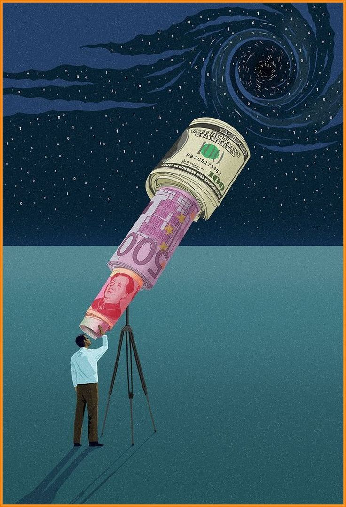

Hay una frase que quedó grabada desde que leí Padre Rico, Padre Pobre: "La mente puede ser el activo más poderoso, o el pasivo más grande."
Robert Kiyosaki: “El apalancamiento no comienza con dinero. Comienza con la mente.”
Una mente entrenada puede aprender, crear, ver oportunidades, resolver problemas y multiplicar resultados. Pero si está guiada por el miedo, la confusión o la inercia, se convierte en el mayor obstáculo.
La educación financiera no es solo comprender tasas de interés o inversiones. Es desarrollar una forma distinta de observar y decidir.
Las personas ricas entrenan su mente leyendo, teniendo un coach y asistiendo a cursos. Las personas pobres la apagan con redes sociales y vicios.
“los libros y un coach personal son la mejor forma de volver tu cerebro en una money machine”
La mayoría corre a buscar acciones, cripto o bienes raíces. Pero la inversión que nunca falla es la que haces en ti mismo.

Warren Buffett: “Cuanto más aprendes, más ganas.”
Una mente bien formada te permite evaluar mejor cualquier inversión futura. Y eso es algo que ni la inflación, ni las crisis pueden quitarte.
Antes de poner dinero en cualquier cosa, pon atención en tus hábitos, tus creencias y tu educación financiera.
Lee libros, escucha podcasts, conversa con gente que ya vive como tú quieres. Esa es la inversión que paga intereses para toda la vida.
“El ROI más alto siempre viene de convertirte en alguien más sabio.”